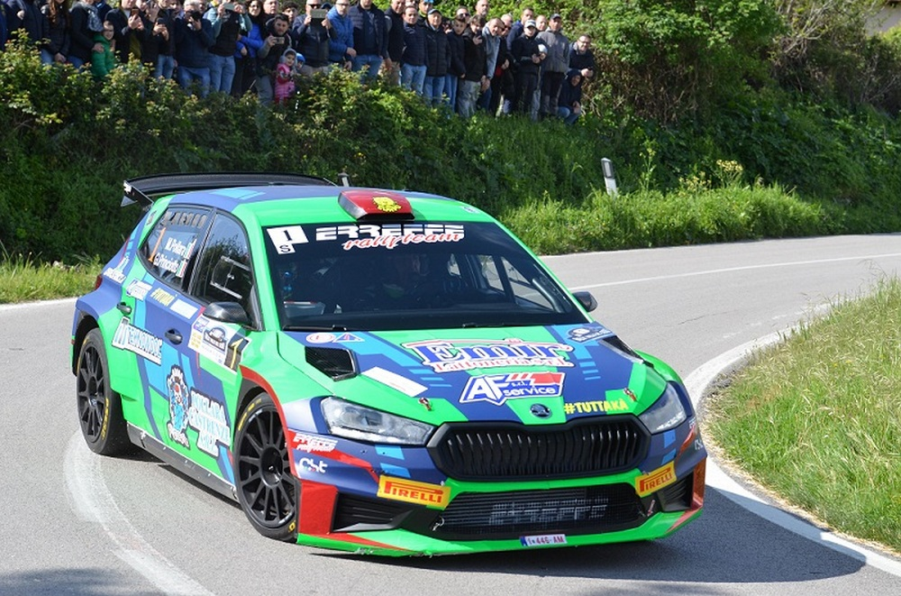
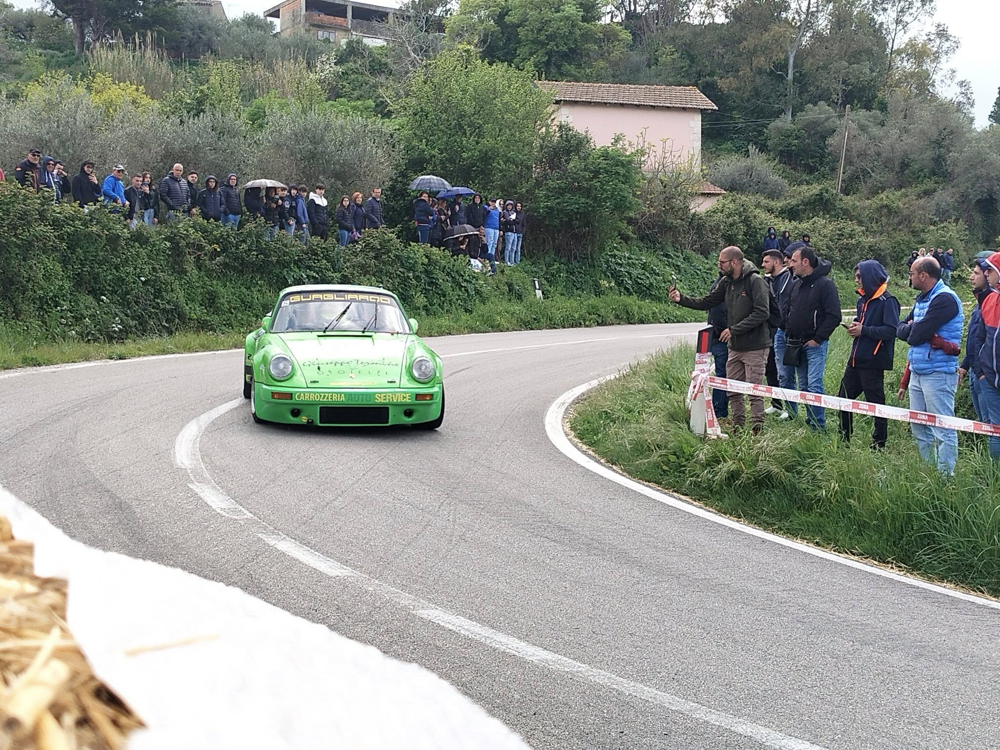

PALERMO
4 al 6 aprile 2025

Peugeot 106 Rallye
Il 18° Rally Valle del Sosio rappresenta uno degli appuntamenti più attesi del panorama rallistico siciliano. Organizzato dall'Associazione Rally Valle del Sosio con il supporto delle amministrazioni locali, l'evento è valido per la Coppa Rally di Zona e richiama ogni anno numerosi equipaggi pronti a sfidarsi sulle tecniche e spettacolari strade dei Monti Sicani, attraversando i comuni di Chiusa Sclafani, Bisacquino, Giuliana, Palazzo Adriano e Prizzi.
Il programma della manifestazione si sviluppa nel corso di un intenso fine settimana, con le verifiche tecnico-sportive e lo shakedown dedicato alla messa a punto delle vetture, per poi entrare nel vivo con le prove speciali che si snodano lungo i suggestivi percorsi della Valle del Sosio. Un tracciato caratterizzato da continui cambi di ritmo, tratti guidati e panorami unici, capace di offrire spettacolo agli appassionati e una sfida impegnativa per tutti gli equipaggi in gara.
Il 18° Rally Valle del Sosio si è svolto sabato 5 e domenica 6 aprile 2025 tra i comuni della Valle del Sosio e dei Monti Sicani, attraversando i territori di Chiusa Sclafani, Bisacquino, Giuliana, Palazzo Adriano e Prizzi.
Partenza: Piazza Umberto I, Palazzo Adriano, dove gli equipaggi hanno preso il via della competizione.
Arrivo e Premiazione: Piazza Santa Rosalia, Chiusa Sclafani, sede del traguardo finale e della cerimonia di premiazione. Il parco assistenza è stato allestito nell'Area PIP di contrada Rizza a Chiusa Sclafani, cuore logistico dell'intera manifestazione.
